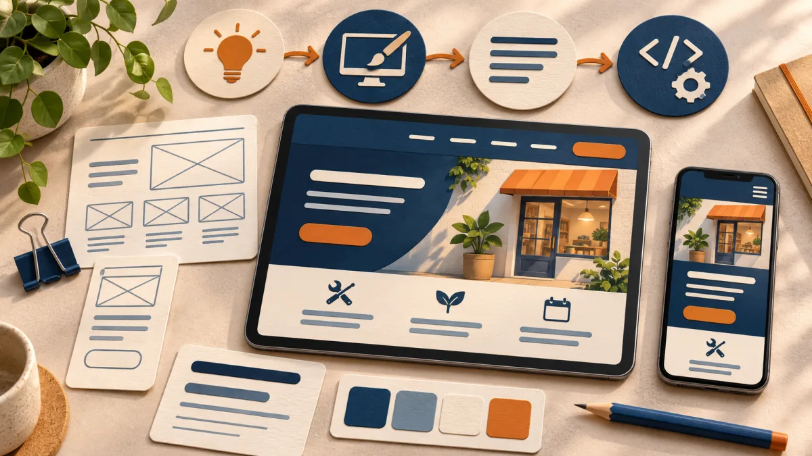
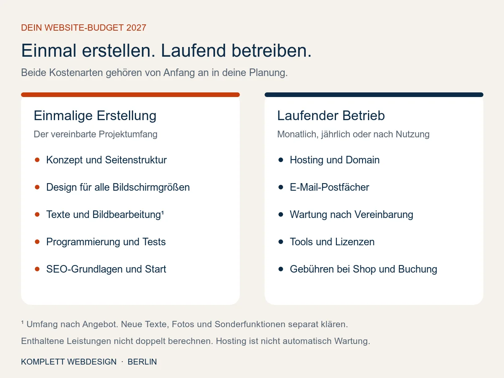
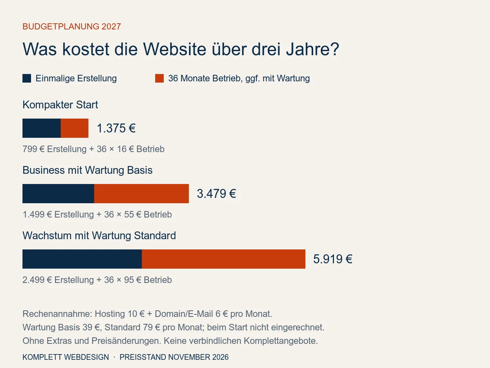
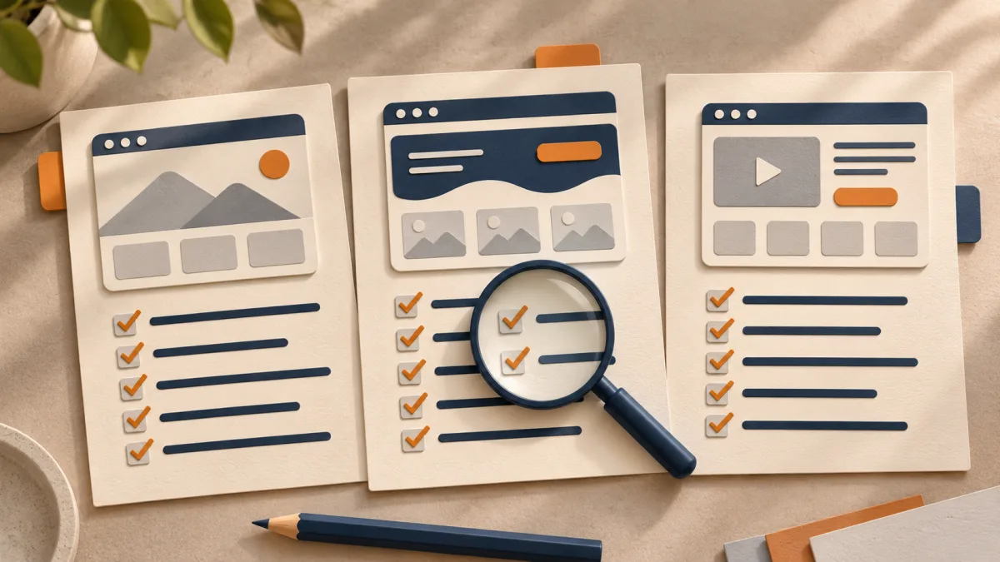

Was kostet eine Website 2027? Wenn du eine professionelle Website erstellen lassen möchtest, kannst du für einen kompakten Auftritt zunächst etwa 1.000 bis 3.000 € einplanen. Für eine kleine Unternehmenswebsite mit mehreren Leistungsseiten ist ein Budget von ungefähr 2.500 bis 8.000 € ein sinnvoller Ausgangspunkt. Umfangreiche Relaunches, Shops und Schnittstellen können deutlich darüber liegen. Hinzu kommen laufende Kosten für den Betrieb.
Bei Komplett Webdesign in Berlin beginnt der kompakte Einstieg aktuell bei 799 €, die mehrseitige Unternehmenswebsite bei 1.499 €. Wie diese Einstiegspreise zu den größeren Budgetspannen passen und welche Ausgaben zusätzlich entstehen können, erfährst du hier.
Preisstand: 15. November 2026. Ausblick für deine Planung 2027. Die allgemeinen Spannen sind redaktionelle Planungswerte auf Basis veröffentlichter Anbieterpreise, keine repräsentative Marktstatistik und keine feststehenden Preise für 2027. Die Preise von Komplett Webdesign entsprechen dem aktuellen Angebot. Dein verbindlicher Preis ergibt sich aus dem vereinbarten Leistungsumfang und dem Angebot zum Buchungszeitpunkt.
Das findest du in diesem Artikel
- Website-Preise 2027 im Überblick
- Was gehört zum Preis einer Website?
- Die aktuellen Pakete von Komplett Webdesign
- Laufende Kosten pro Monat und Jahr
- Drei Beispielrechnungen über drei Jahre
- Zusatzkosten und typische Kostenfallen
- Baukasten, WordPress und KI: Wo kannst du sparen?
- Checkliste für vergleichbare Angebote
- Häufige Fragen zu Webdesign-Preisen 2027
Webdesign-Preise 2027: Mit welchem Budget solltest du rechnen?
Eine Website mit einer Seite, vorhandenen Texten und einem einfachen Kontaktweg lässt sich anders kalkulieren als ein Auftritt mit zwölf Unterseiten, neuen Fotos und Terminbuchung. Vergleiche deshalb immer ähnliche Aufgaben.
| Website-Typ | Budget zur Orientierung | Was den Umfang bestimmt |
|---|---|---|
| Kompakter Onepager | ca. 1.000–3.000 € | Ein Angebot, wenige Abschnitte, gelieferte Inhalte, einfacher Kontaktweg |
| Kleine Unternehmenswebsite | ca. 2.500–8.000 € | Mehrere Leistungsseiten, individuelles Layout, Referenzen und Anfrageformular |
| Größere Website oder Relaunch | ca. 5.000–15.000 € und mehr | Neue Struktur, Inhaltsübernahme, Weiterleitungen, mehr Abstimmung |
| Onlineshop oder komplexe Funktionen | ca. 5.000–20.000 € und mehr | Produkte, Zahlung, Versand, Buchungslogik, Schnittstellen und Tests |
Diese breiten Budgetkorridore sind unsere Einordnung für die Projektplanung. Veröffentlichte Preisübersichten von Pappelbaum Design und Evolix Media zeigen bereits für 2026 erhebliche Unterschiede nach Anbieter und Umfang. Daraus lässt sich kein fester Preisaufschlag für 2027 ableiten.
Wichtig beim Preisvergleich: Prüfe, ob Beträge netto oder brutto angegeben sind. Bei einem umsatzsteuerpflichtigen Anbieter können zu einem Nettopreis noch Steuern hinzukommen. Die genannten allgemeinen Budgetspannen ersetzen deshalb keinen Vergleich der tatsächlichen Rechnungsbeträge. Komplett Webdesign weist seine aktuellen Preise gemäß § 19 UStG ohne Umsatzsteuer aus.

Was gehört zu den einmaligen Kosten einer Website?
Der sichtbare Entwurf ist nur ein Teil der Arbeit. Ein brauchbares Website-Angebot beschreibt auch, wie Inhalte entstehen, wie die Seite technisch umgesetzt wird und wer den Start vorbereitet.
Konzept, Seitenstruktur und Kontaktwege
Zuerst wird geklärt, wen deine Website erreichen soll und was Besucher dort tun sollen: anrufen, ein Angebot anfragen oder einen Termin vereinbaren. Daraus entstehen Seitenplan, Navigation und die Reihenfolge der Inhalte. Ein Handwerksbetrieb mit mehreren Leistungen braucht möglicherweise eigene Leistungsseiten; für ein einzelnes Angebot kann ein Onepager reichen.
Design für Smartphone und Computer
Zum Webdesign gehören Layout, Farben, Schrift und die Darstellung auf unterschiedlichen Bildschirmgrößen. Auch gut erreichbare Kontaktbuttons, lesbare Texte, Kontraste und die Bedienung per Tastatur sollten berücksichtigt werden. Zusätzliche Anforderungen und Prüfungen zur Barrierefreiheit gehören ausdrücklich ins Angebot.
Texte, Bilder und technische Umsetzung
Vorhandene Texte einzubinden ist etwas anderes, als Leistungen zu recherchieren und alle Inhalte neu zu schreiben. Bei Bildern zählen Auswahl, Nutzungsrechte, Zuschnitt und Dateigröße. Dazu kommen Programmierung, Formulare, Weiterleitungen und die Prüfung der wichtigsten Funktionen. Ein Fotoshooting oder ein neues Logo ist eine eigene Leistung.
SEO-Grundlagen und Veröffentlichung
Eine sinnvolle technische Grundlage umfasst unter anderem verständliche Seitenadressen, passende Seitentitel und Beschreibungen, eine klare Überschriftenstruktur, interne Links und gut auslieferbare Inhalte. Beim Relaunch müssen außerdem wichtige alte URLs berücksichtigt werden. Laufende Suchmaschinenoptimierung mit neuen Inhalten und Auswertung wird gesondert geplant.

Was kostet eine Website bei Komplett Webdesign?
Wenn du eine Website in Berlin erstellen lassen möchtest, findest du bei mir klar abgegrenzte Pakete. Du arbeitest direkt mit mir, Sören Blocksdorf. Seitenumfang, Inhalte und gewünschte Funktionen entscheiden darüber, welches Paket zu deinem Projekt passt.
| Paket | Einmaliger Einstieg | Typischer Umfang |
|---|---|---|
| Start | ab 799 € | 1 bis 3 Seiten oder ein kompakter Onepager |
| Business | ab 1.499 € | Ca. 4 bis 7 Seiten für Unternehmen mit mehreren Inhalten |
| Wachstum | ab 2.499 € | Ca. 8 bis 12 Inhaltsseiten oder ein Relaunch im vereinbarten Umfang |
| Individuell | ab 3.500 € oder nach Aufwand | Sonderfunktionen, CMS, Buchung, Shop oder größere Anforderungen nach Prüfung |
Die vollständige Paketübersicht mit Leistungen und Grenzen zeigt dir, was jeweils enthalten ist. Die Einstiegspreise beziehen sich auf den definierten Umfang. Vollständig neue Texte, zusätzliche Seiten, Fotos, externe Dienste und besondere Funktionen können das Angebot erweitern. Hosting und Wartung werden separat vereinbart.
Die Preise liegen teilweise unter den allgemeinen Budgetkorridoren, weil es sich um konkrete Einstiegspakete mit begrenztem Umfang handelt. Daraus folgt kein pauschaler Preisvorteil bei jedem Projekt. Entscheidend ist, ob Seitenzahl, Inhalte und Funktionen zu deinem tatsächlichen Bedarf passen.
Was kostet eine Website monatlich und pro Jahr?
Nach dem Start brauchst du eine Adresse und einen technischen Betrieb. Je nach Website kommen Postfächer, Wartung und externe Dienste dazu. Die folgende Übersicht hilft dir, die Kostenarten zu erfassen; sie ist keine Tarifzusage für 2027.
| Kostenart | Orientierung | Worauf du achten solltest |
|---|---|---|
| Domain | Ca. 10–30 € pro Jahr für eine gängige Domain | Endung, Verlängerungspreis und eventuell bereits im Hosting enthaltene Domains |
| Hosting einer kleinen Website | Ca. 5–25 € pro Monat als Planungsrahmen | Technik, Leistung, Backups und regulärer Preis nach einer Aktion |
| Im Tarif enthalten oder zusätzlich kalkulieren | Anzahl der Postfächer, Speicher und mögliche Umzugskosten | |
| Wartung bei Komplett Webdesign | Aktuell Basis ab 39 €, Standard ab 79 €, Plus ab 129 € pro Monat | Optional; Leistung, Voraussetzungen und Änderungsrahmen nach Vereinbarung |
| Buchung, Newsletter, Consent, Lizenzen | Nach Anbieter und Tarif | Einrichtungsaufwand, Monatsgebühren, Nutzungslimits und Verlängerungen |
| Zahlungsabwicklung im Shop | Nach Zahlungsanbieter und Transaktionen | Kann zusätzlich zu Shop- und Hostingkosten anfallen |
Ein Beispiel dafür, warum du Tarife prüfen solltest: ALL-INKL bündelt im Privat-Tarif mehrere Domains mit Webhosting. Solche enthaltenen Leistungen solltest du nicht ein zweites Mal berechnen. Ob ein Hostingtarif zur technischen Umsetzung deiner Website passt, muss separat geprüft werden.
Hosting ist nicht automatisch Wartung. Die Auslieferung einer Website umfasst nicht zwangsläufig Inhaltsänderungen, die Pflege der eingesetzten Software oder die Kontrolle von Formularen. Wie ich diese Leistungen abgrenze, liest du unter laufende Website-Kosten und Wartung und Support.
Drei Beispielrechnungen: Website-Kosten im ersten Jahr und über drei Jahre
Für einen fairen Vergleich rechne ich mit zwölf vollen Betriebsmonaten ab dem Start und mit gleichbleibenden Kosten über drei Jahre. Die Erstellung basiert auf den heutigen Paket-Einstiegspreisen. Hosting mit 10 € und Domain inklusive E-Mail mit 6 € pro Monat sind frei gewählte Rechenannahmen, keine angebotenen Tarife. Wartung wird, wo ausgewiesen, mit dem aktuellen Einstiegspreis angesetzt.
Die Beträge werden als angenommene Rechnungsbeträge addiert. Zusätzliche Texte, Fotos, Rechtstexte, Tools, Werbung, Preisänderungen und spätere Erweiterungen sind nicht enthalten. Falls dein Projekt sie braucht, gehören sie zusätzlich ins Budget.
| Beispiel | Erstellung | Betrieb monatlich | Erstes Jahr gesamt | Drei Jahre gesamt |
|---|---|---|---|---|
| Kompakter Start | 799 € | 16 € | 991 € | 1.375 € |
| Business mit Wartung Basis | 1.499 € | 55 € | 2.159 € | 3.479 € |
| Wachstum mit Wartung Standard | 2.499 € | 95 € | 3.639 € | 5.919 € |
1. Kompakter Einstieg für Selbstständige
Du hast ein klar beschriebenes Angebot, eigene Bilder und fertige Texte. Im Rechenbeispiel ergeben 799 € Erstellung plus 12 × 16 € Betrieb 991 € im ersten Jahr. Im zweiten und dritten Jahr fallen jeweils 192 € an. Ein Wartungsvertrag ist hier nicht eingerechnet; technische Pflege muss trotzdem organisiert und bei Bedarf zusätzlich bezahlt werden.
2. Unternehmenswebsite für einen lokalen Betrieb
Ein Dienstleistungs- oder Handwerksbetrieb braucht mehrere Seiten und möchte technische Grundbetreuung vereinbaren. Bei 1.499 € Erstellung, 16 € angenommenen Betriebskosten und 39 € Wartung monatlich ergibt das 2.159 € im ersten Jahr. Im zweiten und dritten Jahr sind es jeweils 660 €. Wenn Texte und Fotos neu entstehen sollen, kommen deren vereinbarte Kosten hinzu.
3. Umfangreicherer Auftritt oder Relaunch
Du möchtest mehrere Leistungsseiten strukturieren oder eine bestehende Website erneuern. Mit 2.499 € Erstellung und monatlich 16 € Betrieb plus 79 € Wartung Standard ergibt das 3.639 € im ersten Jahr. Danach fallen rechnerisch jeweils 1.140 € pro Jahr an. Größere Inhaltsmigrationen, Shops und Schnittstellen müssen separat kalkuliert werden.

Deine Budgetformel: Erstellung + benötigte Zusatzleistungen + 12 × monatliche Kosten + jährliche Gebühren = Kosten im ersten Betriebsjahr. Berechne jährliche Gebühren nur dann zusätzlich, wenn sie nicht schon im Monatspreis enthalten sind.
Welche Zusatzkosten werden bei einer Website häufig übersehen?
- Texte und Fotos: Kläre, ob du fertige Inhalte lieferst oder ob Recherche, Schreiben und Bildproduktion beauftragt werden. Die Strukturierung deiner Stichpunkte ersetzt nicht automatisch die vollständige Texterstellung.
- Logo, Bild- und Schriftlizenzen: Ein Website-Layout umfasst nicht automatisch ein neues Erscheinungsbild. Nutzungsrechte und eventuell wiederkehrende Lizenzkosten sollten dokumentiert sein.
- Rechtstexte und Datenschutz: Technisches Einbinden, Erstellen und rechtliches Prüfen sind unterschiedliche Aufgaben. Kalkuliere bei Bedarf einen spezialisierten Anbieter oder eine Rechtsberatung ein.
- CMS, Sprachen und zusätzliche Seiten: Wenn du selbst Inhalte bearbeiten möchtest, braucht es eine passende Lösung und eine Einweisung. Eine zweite Sprache benötigt zusätzlich Inhalte und Pflege.
- Terminbuchung und Shop: Neben der Einbindung können Abos, Gebühren pro Zahlung und die Pflege von Produkten oder Terminen entstehen. Ein Buchungslink ist deutlich weniger aufwendig als eine individuelle Buchungsverwaltung.
- Relaunch und Umzug: Inhalte, wichtige alte URLs, Domain, DNS und E-Mail sollten vorab erfasst werden. Ein E-Mail-Umzug ist eine gesonderte Aufgabe.
- SEO, Werbung und Auswertung: Technische Grundlagen beim Start ersetzen keine laufenden Inhalte oder Kampagnen. Anzeigenbudget und regelmäßige Betreuung sind eigene Budgetposten.
- Korrekturen und spätere Änderungen: Halte fest, wie viele Feedbackrunden enthalten sind und wie neue Wünsche nach der Freigabe abgerechnet werden.
Bei Komplett Webdesign findest du die Abgrenzung unter Zusatzleistungen für deine Website. Für eine bestehende Seite lohnt außerdem ein Blick auf den Website-Relaunch.
Wird Webdesign 2027 durch KI und Baukästen günstiger?
KI kann bei Textentwürfen, Layoutideen und einzelnen Entwicklungsschritten helfen. Daraus folgt aber kein verlässlicher Rabatt für jedes Website-Projekt. Jemand muss weiterhin die richtigen Inhalte auswählen, Aussagen prüfen, Kontaktwege testen und die technische Umsetzung betreuen.
Für Suchmaschinen zählt außerdem der Nutzen der Inhalte. Google empfiehlt bei KI-generierten Inhalten, auf Genauigkeit, Qualität und Relevanz zu achten. Eine große Menge automatisch erstellter Seiten ist deshalb kein Ersatz für verständliche Informationen zu deinem Angebot.
Baukasten: niedriger Einstieg, eigener Zeitaufwand
Ein Baukasten kann passen, wenn du eine überschaubare Website selbst gestalten und pflegen möchtest. Vergleiche reguläre Tarifpreise, enthaltene Funktionen und Wechselmöglichkeiten. Rechne deine Zeit für Texte, Bilder und die mobile Darstellung mit: 30 Stunden zu einem intern angesetzten Wert von 50 € entsprechen bereits 1.500 € eigener Arbeitszeit. Das ist ein Rechenbeispiel, keine allgemeine Zeitprognose.
WordPress: Softwarepreis und Projektpreis unterscheiden sich
WordPress ist als Software frei verfügbar. Konzeption, Design, Einrichtung, Inhalte und Betreuung verursachen trotzdem Aufwand. Je nach Lösung kommen kostenpflichtige Erweiterungen hinzu. Frage deshalb nach dem Gesamtangebot und der späteren Pflege, statt nur den Softwarepreis zu vergleichen. Die Standardpakete von Komplett Webdesign werden individuell umgesetzt; ein CMS gehört nach Vereinbarung in die Projektplanung.
Einmalpreis oder Website-Abo?
Ein Abo verteilt die Zahlung über die Zeit. Vergleiche Einrichtung, Monatsbetrag, Mindestlaufzeit, enthaltene Betreuung und die Übergabe bei Vertragsende. Ein hypothetisches Abo von 89 € monatlich kostet über 36 Monate 3.204 € zuzüglich einer möglichen Einrichtung. Ob das günstig ist, hängt davon ab, welche Leistungen dafür enthalten sind.

So vergleichst du Webdesign-Angebote für 2027
Schicke jedem angefragten Anbieter dieselben Anforderungen. So erkennst du, ob ein höherer Preis zusätzliche Arbeit abdeckt oder ob zwei Angebote tatsächlich vergleichbar sind.
- Ziel nennen: Soll die Website Anfragen, Terminwünsche, Bewerbungen oder Verkäufe ermöglichen?
- Seiten festlegen: Welche Inhalte brauchst du zum Start, welche können später dazukommen?
- Inhalte zuordnen: Wer liefert Texte, Fotos, Logo und gegebenenfalls Übersetzungen?
- Funktionen beschreiben: Reicht ein Kontaktformular oder brauchst du Buchung, Shop und Schnittstellen?
- Qualität konkretisieren: Welche mobilen Ansichten, Formulare, Ladezeiten und Bedienwege werden geprüft?
- SEO und Migration abgrenzen: Welche Grundlagen und Weiterleitungen sind enthalten, was wird später betreut?
- Folgekosten vollständig erfassen: Hosting, Domain, E-Mail, Wartung, Lizenzen und Fremdgebühren jeweils mit regulärem Preis nennen lassen.
- Übergabe und Änderungen klären: Wer hält Domain und Konten, welche Rechte erhältst du und wie werden spätere Arbeiten berechnet?
Dein Website-Budget für 2027 konkret einschätzen lassen
Du planst eine neue Website oder einen Relaunch in Berlin? Schick mir kurz, was du anbietest, wie viele Seiten du ungefähr brauchst und ob Texte und Bilder schon vorhanden sind. Ich ordne ein, welches Paket passt und welche Zusatzleistungen sowie laufenden Kosten du berücksichtigen solltest.
Website-Budget unverbindlich anfragen
Zur Vorbereitung kannst du dir bisherige Website-Projekte ansehen.
Häufige Fragen zu Webdesign-Preisen 2027
Was kostet eine professionelle Website 2027 ungefähr?
Als redaktionellen Planungsrahmen kannst du etwa 1.000 bis 3.000 € für einen kompakten Auftritt und 2.500 bis 8.000 € für eine kleine Unternehmenswebsite ansetzen. Sonderfunktionen und umfangreiche Inhalte erhöhen das Budget. Das sind Orientierungswerte auf Basis heutiger Anbieterpreise, keine feststehenden Marktpreise für 2027.
Was kostet eine Website bei Komplett Webdesign?
Stand November 2026 beginnt Start bei 799 €, Business bei 1.499 €, Wachstum bei 2.499 € und Individuell bei 3.500 € oder nach Aufwand. Es handelt sich um Einstiegspreise für die vereinbarte Erstellung. Laufender Betrieb und Zusatzleistungen werden separat vereinbart; für 2027 gilt das jeweilige Angebot.
Was kostet eine Website mit fünf Seiten?
Fünf Seiten passen vom Umfang häufig in das Business-Paket von Komplett Webdesign, aktuell ab 1.499 €. Der endgültige Preis hängt unter anderem von Texten, Bildern, Funktionen und Abstimmung ab. Hosting, Wartung und externe Tools gehören separat in die Kalkulation.
Welche monatlichen Kosten hat eine Website?
Je nach Tarif fallen Hosting, Domain, E-Mail und gegebenenfalls Wartung oder externe Dienste an. Im Beispiel dieses Artikels werden 16 € monatlich für Hosting, Domain und E-Mail angenommen. Mit Wartung Basis zu aktuell ab 39 € sind es rechnerisch 55 € monatlich. Die 16 € sind eine Rechenannahme, kein angebotener Tarif.
Sind SEO, Texte und Bilder im Webdesign-Preis enthalten?
Das hängt vom vereinbarten Umfang ab. Bei Komplett Webdesign gehören technische SEO-Grundlagen und die Bearbeitung gelieferter Inhalte je nach Paket dazu. Vollständige Texterstellung, Fotoshooting, Lizenzen und laufende SEO-Betreuung müssen gesondert geprüft und gegebenenfalls beauftragt werden.
Was kostet ein Website-Relaunch?
Der Preis hängt von Seitenumfang, neuer Gestaltung, Inhaltsübernahme und technischen Änderungen ab. Bei Komplett Webdesign ist das Wachstum-Paket aktuell ab 2.499 € ein möglicher Einstieg. Viele alte URLs, neue Texte, Shops oder Schnittstellen können einen größeren individuellen Umfang erfordern.
Ist ein Shop oder Buchungssystem im Paketpreis enthalten?
Shops, Buchungssysteme und individuelle Schnittstellen sind keine pauschalen Bestandteile der Standardpakete. Einrichtung und Integration werden nach Prüfung als Zusatzleistung oder individuelles Projekt kalkuliert. Gebühren externer Anbieter können zusätzlich entstehen.
Sollte ich für 2027 einen festen Preisaufschlag einplanen?
Ein pauschaler Aufschlag lässt sich aus den recherchierten Anbieterpreisen nicht ableiten. Hole ein Angebot mit Leistungsbeschreibung, Gültigkeitsdauer und getrennten Folgekosten ein. Für noch offene Wünsche kannst du zusätzlich eine eigene Budgetreserve vorsehen.
Dieser Beitrag ergänzt unseren bestehenden Ratgeber zu Website-Kosten um die Budgetplanung für 2027. Recherche- und Preisstand: 15. November 2026. Rechenbeispiele sind keine verbindlichen Angebote.